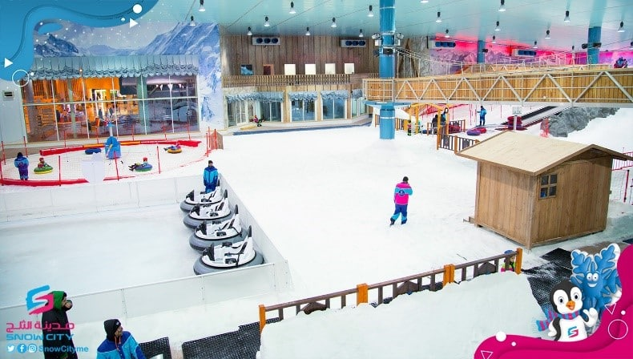
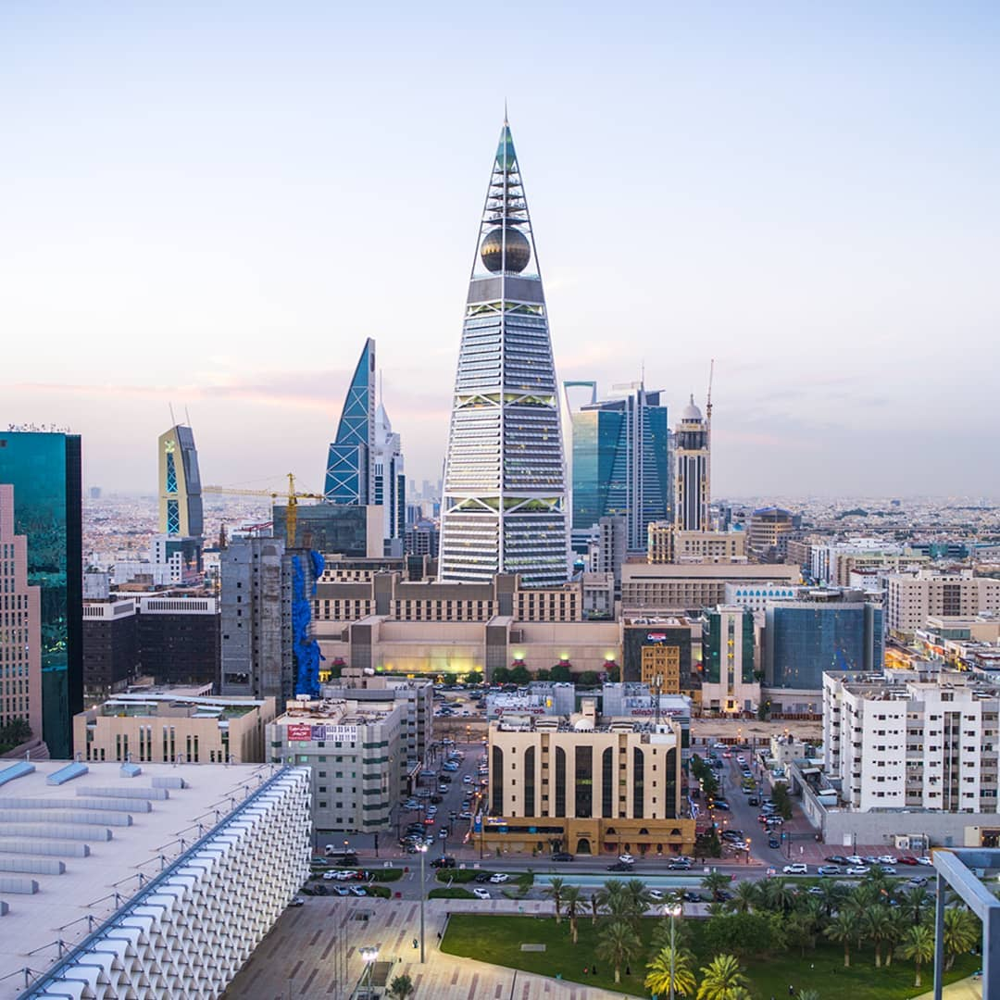
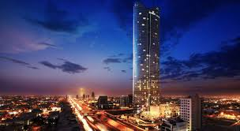
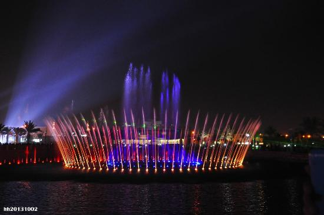
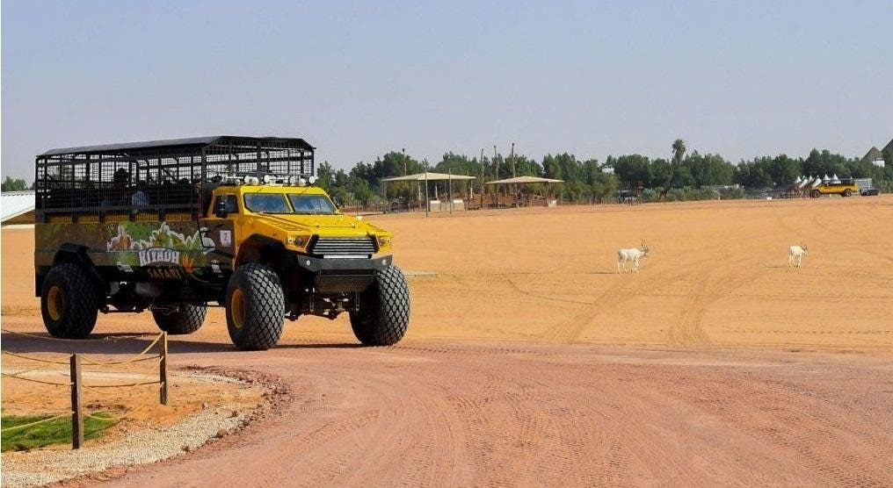

أبرز الوجهات السياحية
مدينة الثلج
 تشتهر مدينة الثلج بالعديد من الأنشطة والألعاب الخاصة بالكبار والصغار على حد سواء حيث تحتوي على 12 لعبة ونشاط ترفيهي جميعهم خاصة بالثلج حيث تصل درجة الحرارة في مدينة الثلج إلى 3 درجات تحت الصفر على مدار السنة كلها، وتعد المدينة الثلجية من اشهر الملاهي في الرياض
برج المملكة

يعد برج المملكة بالرياض أبرز وأشهر مبنى في المدينة، كما يعد من أطول الأبراج في البلاد ، ويعتبر واحد من اهم الاماكن السياحية في الرياض, تم اكتمال إنشاء برج المملكة بالرياض وافتتاحه في عام 2002، ليكون من المعالم الحضرية والعمرانية البارزة والشهيرة في عموم الشرق الأوسط، ومن واجهات البلاد اللامعة، وليصبح أحد أهم المراكز التجارية والسياحية
برج الفيصلية
يحتل برج الفيصليّة المرتبة الأربعين ضمن قائمة أطول المباني العالميّة، يحتوي هذا البرج على الأسواق التجاريّة التي تشغل ثلاثة طوابق كما يحتوي البرج على فندقٍ يُعتبر أحد الفنادق الفخمة ذات النجوم الخمسة،
برج رافال
هو ناطحة سحاب يقع في العاصمة السعودية الرياض يحتوي البرج على فندق كمبنكسي والعديد من المطاعم والنوادي الصحية والقاعات الفخمة والفارهة،
حديقة الملك عبدالله
حديقة الملك عبدالله بالرياض تعد أجمل منتزهات الرياض وأهم مصادر الترفيه لسكان مدينة الرياض وزوّارها، لما توفره من المساحات الخضراء التي تريح النفس، البحيرات الرائعة، وممرات للمشاة
منتزه الملك عبد الله هو من أهم معالم الرياض الترفيهية، يتميز بتصميم مبتكر بأحدث التقنيات والأجهزة الحديثة، ويتميز بمناظر طبيعية خضراء ومسطحات مائية رائعة الجمال، يعد المتنزه واجهة سياحية لأهالي المنطقة وللزائرين إلى المدينة
رياض سفاري
يضم رياض سفاري مجموعة متنوعة للغاية من الحيوانات النادرة والتي تم إحضارها خصيصاً إلى السعودية حيث تضم الفعالية أكثر من800 نوع من الحيوانات، بالإضافة إلى مسرح مفتوح تم إعداده حصرياً للعروض المسرحية المتميزة من سيرك الحيوانات، العروض البهلوانيةوعروض الفرقة الأفريقية الراقصة
السابق